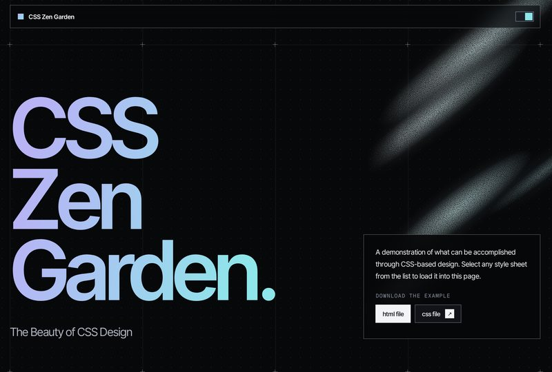
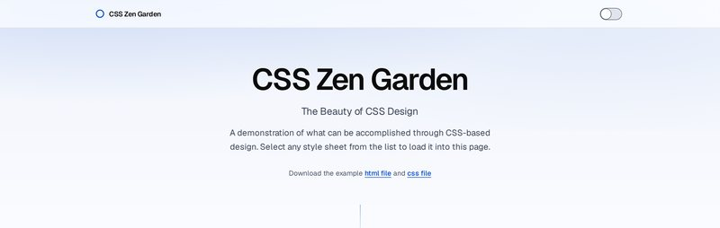
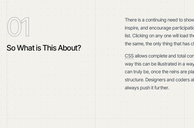
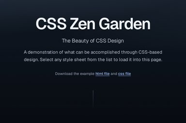
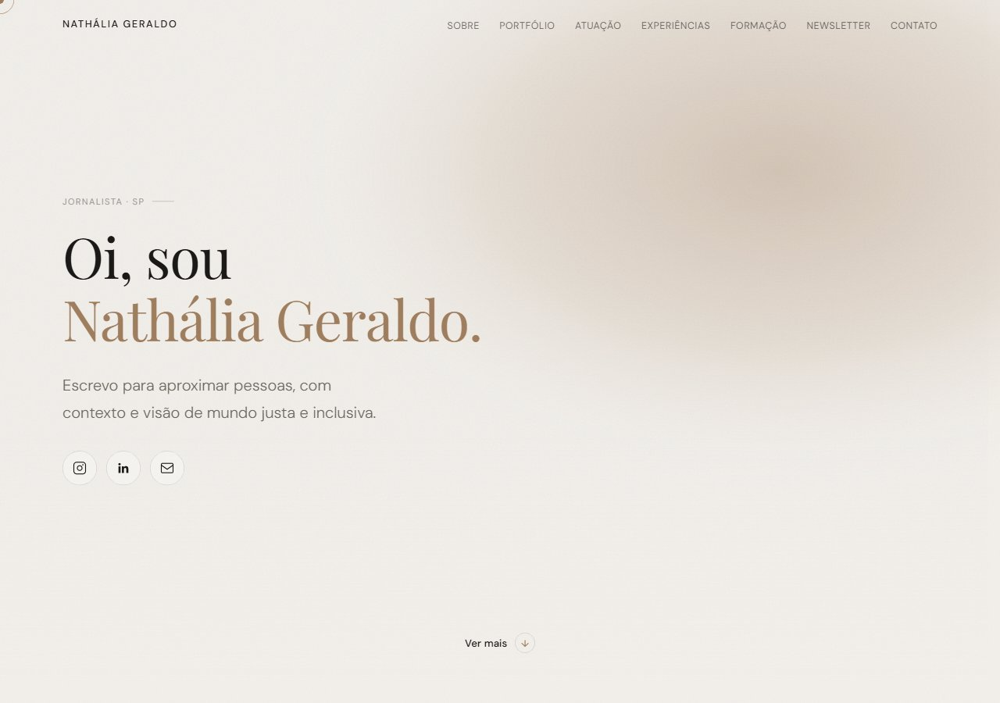
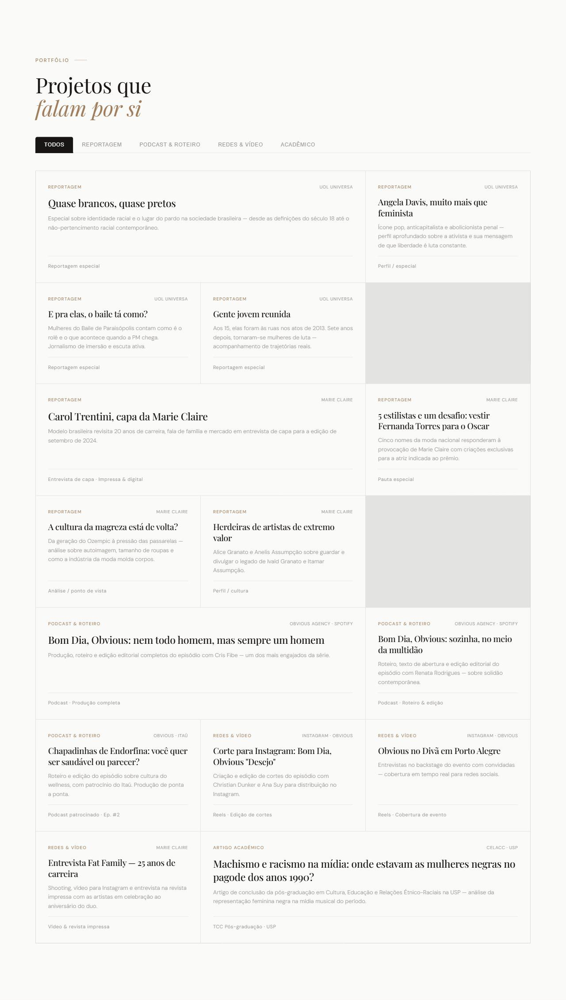
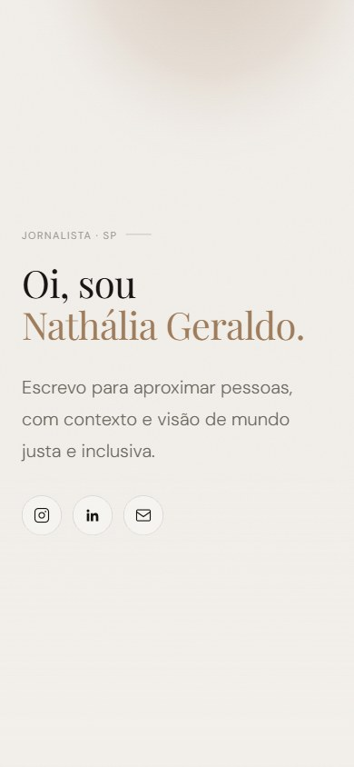

Felipe Oliveira / product designer / São Paulo
Projeto produtos digitais entre estratégia, interface e implementação.
Senior Product Designer focado em Design Systems e estratégia.
8+ anos em produto · ex-front-end · design systems em escala
Minha jornada com tecnologia começou em 2010, no suporte técnico de uma fábrica de software em Sorocaba. Foi lá que descobri o que era programação. De lá pra cá, passei por social media, design e desenvolvimento front-end (saudades, jQuery), até me achar como Product Designer em 2019, numa startup. Foi ali que vi que poderia usar toda essa bagagem pra criar produtos digitais relevantes e de impacto.
Atuar com design systems sempre foi um caminho natural. Minha vivência com front-end me mostrou cedo que componentes bem organizados e decisões claras de design são o que sustentam a escala.
Não basta desenhar produtos: precisamos desenhar produtos para serem construídos.
Trajetória
-
Tivita
Jun 2024 - Set 2026
Fintech + Health care. Fui o primeiro designer contratado na startup, atuei nas features iniciais ponta a ponta e na fundação do design system. Depois, atuei no módulo de automação de guias médicas, do atendimento ao fechamento de lotes, prototipando com apoio do Claude Code.
-
Inventa
Jul 2023 - Jun 2024
Retail tech + Marketplace B2B. Atuei no marketplace e em produtos internos de gestão de clientes, do discovery presencial com vendedores até a interface final.
Baixar case (PDF) (abre em nova aba) -
Olist
Ago 2021 - Jul 2023
E-commerce + Retail tech. Atuei no app do lojista, com notificações e ajustes rápidos de preço e estoque, e depois na integração com a Tiny, unificando onboarding e seleção de planos entre os dois ecossistemas.
Baixar case (PDF) (abre em nova aba) -
Stone
Dez 2020 - Ago 2021
Fintech. Atuei no design system e nas primeiras versões da dashboard da conta, Web e Mobile, onde lojistas gerenciavam cartões, Pix e contratação de seguros e empréstimos.
-
Meiuca
Out 2019 - Jun 2020
Design studio. Meu projeto principal foi o design system da XP Investimentos: 6 meses mapeando inconsistências entre produtos e construindo foundations e primeiros componentes para toda a companhia.
-
Goomer
Out 2018 - Out 2019
Foodtech + Retail tech. Atuei na ferramenta de gestão de cardápios digitais e na primeira fase dos totens de autoatendimento, com bastante discovery de campo para mapear a jornada dos restaurantes.
side projects
Projetos pessoais, fora do expediente.
-
CSS Zen Garden
2 versões
Minha versão do CSS Zen Garden (abre em nova aba): o HTML original, sem tocar na estrutura, reestilizado só com CSS como uma landing page de startup. Duas direções, uma editorial e outra mais ousada, ambas com tema claro e escuro e validadas contra a WCAG.




-
nosso+
🚧 WIP
Nasceu da evolução de um projeto de curso sobre a conexão Figma + Cursor, que começou como uma dashboard financeira simples. Desenvolvi a landing page, a direção de arte das fotos com IA e o storytelling do nosso+, um conceito de gestão financeira para casais alcançarem objetivos em conjunto.
Ver case completo ↗ -
Dashboard pessoal de corrida, construída com meus próprios dados de treino (sou maratonista). Ainda em refinamento, a ideia é uma leitura mais direta e visual da minha performance ao longo do tempo.
-
Portfólio para uma jornalista com mais de 10 anos de carreira, organizado em torno da própria assinatura editorial dela.
Ver case completo ↗


-
CiaTrans
Landing page para uma empresa de transportes de Santos.
-
Implementação em Framer de um design assinado pelo Estúdio Bruma. Parceria em que cuidei só da parte técnica, levando a interface ao ar.